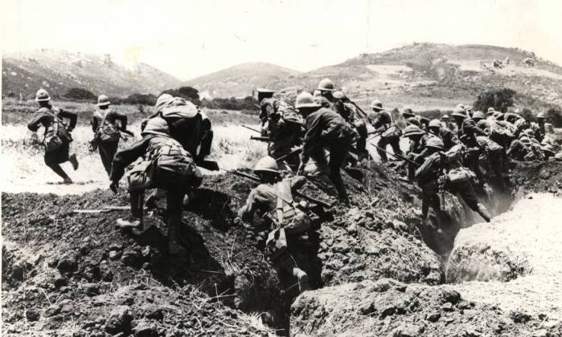
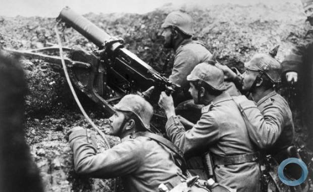
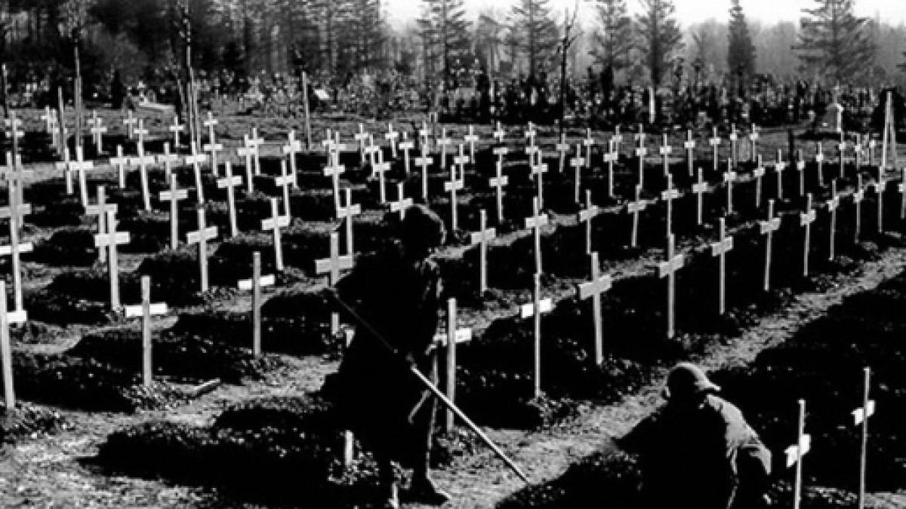

Eventos históricos que mudaram o mundo
Para voltar à página inicial, clique no botão abaixo.
Página inicialPrimeira Guerra Mundial

A Primeira Guerra Mundial foi um marco na história da humanidade. Foi a primeira guerra do século XX e o primeiro conflito em estado de guerra total – aquele em que uma nação mobiliza todos os seus recursos para viabilizar o combate. Estendeu-se de 1914 a 1918 e foi resultado das transformações que aconteciam na Europa, as quais fizeram diferentes nações entrar em choque.
- Localização: Oceano Pacífico, Oceano Atlântico, Oceano Índico, Europa, Ásia, África, Oriente Médio e costas das América do Norte e do Sul
- Data: 1914 - 1918
- Desfecho: Vitória da Entente
Motivo das Guerras:
Desde o final do século XIX, a Europa vivia um clima de insegurança. Por esta razão foi criado um sistema de alianças e acordos que dividia o continente em dois blocos, a fim de garantir proteção e apoio militar mútuo em caso de guerra:
Tríplice Aliança - Império Alemão, Império Austro-Húngaro e Itália;
Tríplice Entente - França, Reino Unido e Império Russo.
O estopim foi o assassinato do herdeiro do trono do Império Austro-Húngaro que arrastou as nações para a guerra por conta de tratados de amizade e defesa.

Os Conflitos e o fim da Guerra
As batalhas desenvolveram-se principalmente em trincheiras. Os soldados ficavam, muitas vezes, centenas de dias entrincheirados, lutando pela conquista de pequenos pedaços de território. A fome e as doenças também eram os inimigos destes guerreiros. Nos combates também houve a utilização de novas tecnologias bélicas como, por exemplo, tanques de guerra e aviões. Enquanto os homens lutavam nas trincheiras, as mulheres trabalhavam nas indústrias bélicas como empregadas.Em 1917, ocorreu um fato histórico de extrema importância: a entrada dos Estados Unidos no conflito. Os EUA entraram ao lado da Tríplice Entente, pois havia acordos comerciais a defender, principalmente com Inglaterra e França.
Este fato marcou a vitória da Entente, forçando os países da Aliança a assinarem a rendição. Os derrotados tiveram ainda que assinar o Tratado de Versalhes, que impunha a estes países fortes restrições e punições. A Alemanha teve seu exército reduzido, sua indústria bélica controlada, perdeu a região do corredor polonês, teve que devolver à França a região da Alsácia Lorena, além de ter que pagar os prejuízos da guerra dos países vencedores. O Tratado de Versalhes teve repercussões na Alemanha, influenciando o início da Segunda Guerra Mundial
A guerra gerou aproximadamente 10 milhões de mortos, o triplo de feridos, arrasou campos agrícolas, destruiu indústrias, além de gerar grandes prejuízos econômicos.
